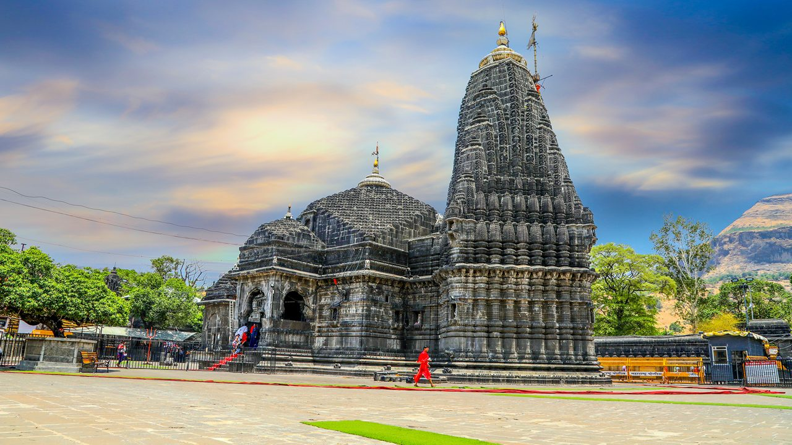

Maharashtra
Jyotirlingas of Maharashtra
Embark on a powerful spiritual circuit through the sacred land of Maharashtra, home to three of the twelve divine Jyotirlingas. These are not mere idols, but *svayambhu* (self-manifested) pillars of cosmic light, representing the infinite, formless reality of Lord Shiva. A pilgrimage to these potent sites is a journey into the heart of Shaivism, blessed by ancient rivers and timeless legends.
The Pillars of Light
The *Shiva Purana* describes the Jyotirlingas as places where Lord Shiva appeared as a fiery column of infinite light. A yatra to these sites is believed to destroy the sins of countless lifetimes and bestow immense spiritual merit upon the devotee.
The Three Sacred Abodes of Shiva
Trimbakeshwar: The Source of Godavari. Located near Nashik, this unique Jyotirlinga has three faces representing the divine trinity of Brahma, Vishnu, and Mahesh (Shiva). It is here that the sage Gautama performed penance to bring the sacred Godavari river to earth. A holy dip at the Kushavarta Kund is a primary ritual before seeking the Lord's *darśana*.
Bhimashankar: Lord of the Sahyadris. Nestled amidst the dense forests of the Sahyadri mountains, this Jyotirlinga is also the source of the Bhima river. Lord Shiva is said to have manifested here in a formidable (*Bhima*) form to defeat the demon Tripurasura. The trek to this temple is an experience of both natural beauty and profound devotion.
Grishneshwar: The Lord of Compassion. Situated near the Ellora Caves, this temple is a testament to the power of unwavering faith. The *Shiva Purana* narrates the story of a devout woman named Ghushma, whose son was murdered. Unshaken in her devotion, she continued her daily worship, and Lord Shiva, pleased by her piety, restored her son to life and manifested here as Grishneshwar, the Lord of Compassion.